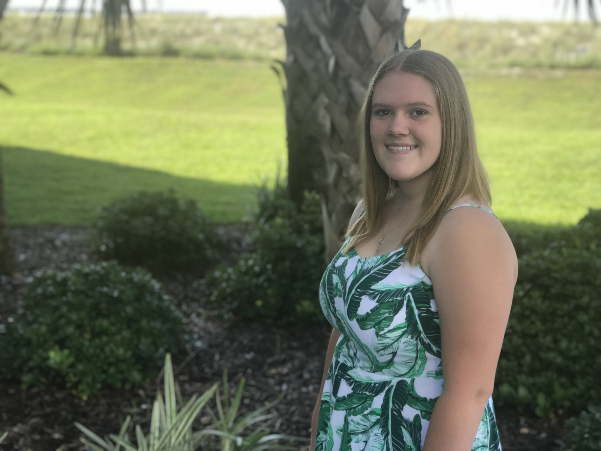

Hello, my name is Amaya Willis. I am currently a sophomore at Penn State Behrend, and I am majoring in Digital Media, Arts, and Technology (DIGIT). Welcome to my project page for DIGIT210. Here you can find information about the project that I completed along with my two groupmates, Jackie Chan and Thomas Sheehy.The goal of the project assignments in DIGIT210 was for students to form groups of 2-4 people and to work together on a group of text of their choice. The groups were to then use their markup skills to meet a certain goal or investigate certain themes/ideas. Our project group decided to take on analyzing Disney songs.

This is a picture of me.